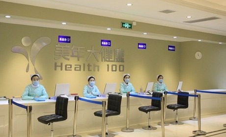

集团动态
青蚨智能社区服务布局已全面展开
时间：2017-04-12
继2月底青蚨与慈铭健康体检签署战略合作之后，青蚨加快布局步伐，于4月初再次传来好消息。青蚨与中国体检行业领导者美年大健康联手签订了战略合作协议，为青蚨全国的金蚨会员提供最精准的健康服务。
强强联手 合作共赢

此次战略合作协议的签署，不仅是青蚨整合内部资源，对现有健康生活服务的有利补充，也是实现双方优势互补，践行布局全国，打造中国第一智能社区服务品牌的重要部署。同时美年大健康意在通过与青蚨的合作进一步提升服务品质，开启高品质布局新篇章。
美年大健康在中国众多金融企业中选择青蚨作为自己的合作伙伴，除双方在对客户服务理念上的一致性外，也是看中了青蚨强大的市场开发能力及强大的客户数据库。青蚨与美年大健康的合作真可谓是强强联手，这是青蚨开启中国第一智能社区服务迈出的重要的步伐，具有着重要的意义。
打造中国第一智能社区服务品牌
2017年年会上，青蚨集团董事长徐东亚在集团未来发展战略上提出以互联网借贷为核心，延伸发展健康生活服务，组建属于青蚨集团的独有生态链条。目前青蚨集团已经完成了以青蚨资产、青蚨普惠、青蚨普信、青蚨康复、青蚨金翼、青蚨餐饮、青蚨食品七大板块组成的完整生态链条。现在的青蚨正朝着全国设立超过200家门店，为门店5公里范围内的用户，提供金融、生活、健康、美容等超过60项优选产品服务的目标而努力。
除慈铭、美年大健康等优质健康体检品牌服务商外，青蚨还将在美容、餐饮、洗车、旅游、家政等与居民品质生活相关联的行业寻找优质品牌服务商。未来青蚨将在全国范围内推动精准优质服务体验，这将掀起一场服务业的新革命，真正让青蚨成为居民与品质生活的桥梁，便捷居民生活，提高生活品质。